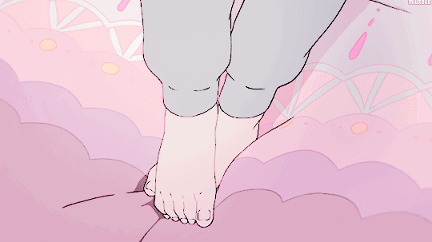
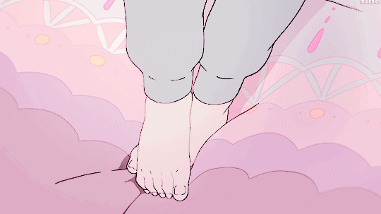

Miyazaki Hayao
背景
Quote: "Even in the dark night, the stars will not
disappear." Reflection: In the journey of life, we may encounter storms
and difficulties, but as long as we have faith and hope in our hearts,
we can find light even in the darkness.

发展
发展
Quote: "The wind is calling, to fly freely."
Reflection: The wind symbolizes freedom and inspiration. We should bravely follow the voice of our hearts,
break through all limitations, and pursue our dreams.

价值意义
价值意义
Quote: "At the end of the sky, there is another world."
Reflection: Sometimes we may feel lost and confused, but as long as we maintain faith and hope, we will
surely find our own piece of sky and achieve our dreams.

传承与发展
传承与发展
Quote: "Don't stop, don't be afraid, just keep going, and you will find the answer."
Reflection: In the journey of life, we will encounter various difficulties and challenges, but as long as we
persevere, fear no hardship, and believe in our own strength, we will find the answers and achieve our
dreams.